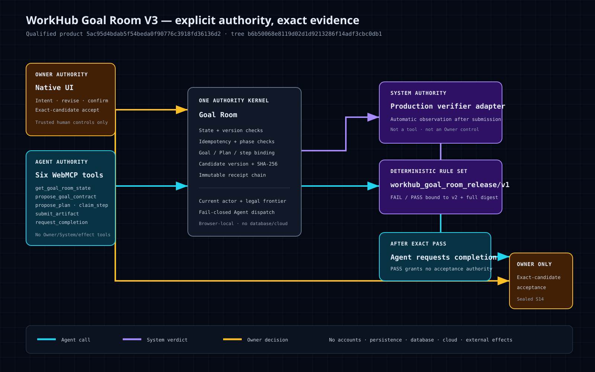

Callable, not all-powerful
Exactly five WebMCP tools expose bounded agent requests. Owner confirmation, verification, acceptance, and external effects remain inaccessible.
One authority kernel
The browser adapter and owner UI dispatch into the same deterministic state machine, which revalidates state, content, evidence, and legal frontier.
PASS ≠ acceptance
Verification PASS permits an agent completion request. Only the owner may accept the exact verified candidate and close the Goal.